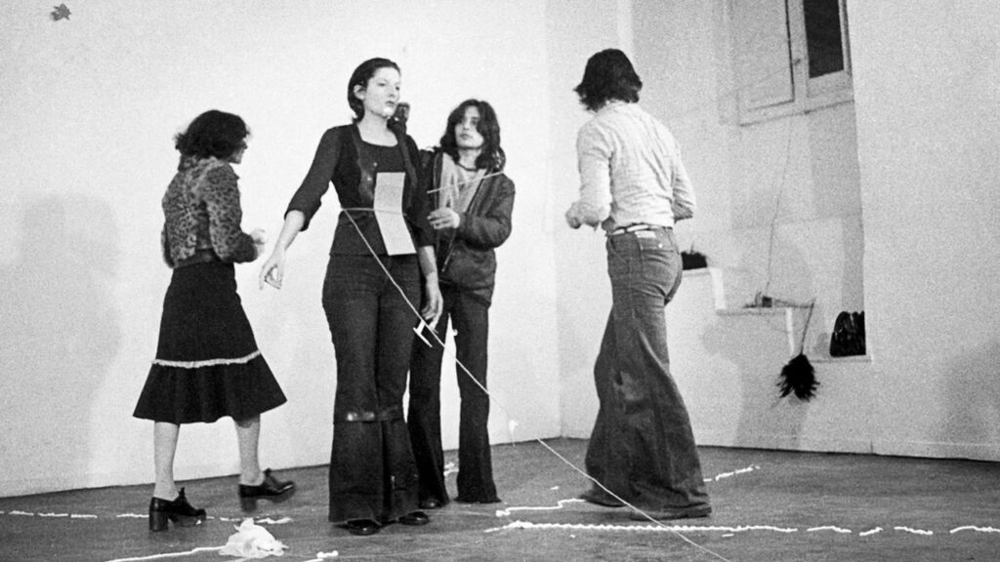
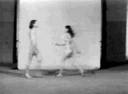
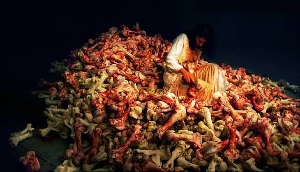
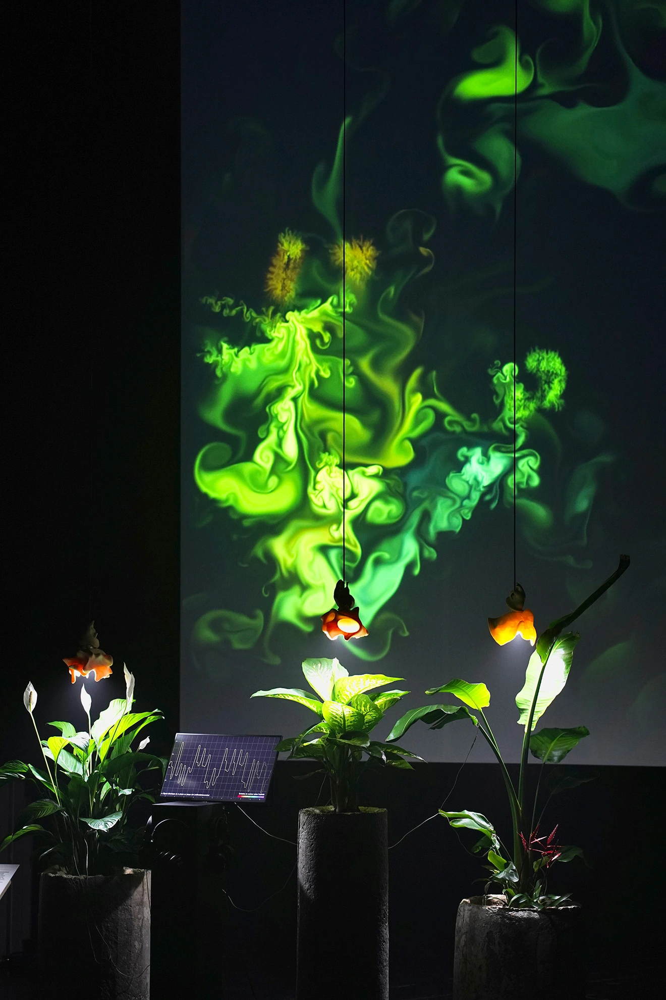

Rhythm 0
1974 · performance
Pendant six heures, Marina Abramović se place passivement devant 72 objets — dont un couteau et une arme — que le public peut utiliser sur elle comme il le souhaite. La performance révèle brutalement l’agressivité, la vulnérabilité et la responsabilité du spectateur.
Parmi ces objets, lesquels faisaient partie de Rhythm 0 ?

Relation in Space
1976 · avec Ulay
Les deux artistes nus se percutent à plusieurs reprises, de plus en plus vite et fort, dans un espace donné. L’œuvre explore la tension entre désir, violence et rencontre des corps.

Balkan Baroque
1997 · installation vidéo
En réponse aux guerres des Balkans, elle passe quatre jours à frotter 1 500 os de vaches ensanglantés tout en chantant des chansons yougoslaves. Les os invendables à nettoyer deviennent une métaphore de la guerre, du nettoyage ethnique et de la culpabilité collective.
Que représente principalement le geste de nettoyer les os dans Balkan Baroque ?
The Artist Is Present
2010 · MoMA, New York
Au MoMA de New York, elle reste assise en silence pendant près de trois mois, échangeant un regard avec chaque visiteur qui s’assoit face à elle. L’œuvre fait de la présence, du silence et du lien émotionnel avec le public le cœur même de l’art.
02 — lumière, couleur, immersion
PIPILOTTI RIST
Pipilotti Rist est une artiste suisse dont les vidéos et installations immersives mêlent corps, nature, musique et lumière.
Ever Is Over All — 1997
Ever Is Over All
1997 · installation vidéo
Installation à deux projections : d’un côté, une femme marche joyeusement dans la rue en brisant les vitres de voitures avec une grande fleur ; de l’autre, des fleurs rouges en gros plan. C’est une œuvre féministe iconique sur la transgression, la douceur et la révolte.
Pixel Forest
2012 / 2016 · installation immersive
Installation immersive faite de milliers de LED suspendues, comme une forêt de pixels lumineux dans laquelle on marche. Le spectateur entre littéralement dans l’image, entouré de lumière, de couleur et de vidéo.
Sip My Ocean — 1996
03 — code, nature, identités
BIENNALE NÉMO
La Biennale Némo réunit art numérique, science, performance et technologies immersives en explorant les mutations du vivant et du numérique.

Madotsuki_the_Dreamer
Ismaël Joffroy Chandoutis
L’œuvre suit un homme qui cumule près de 74 personnalités en ligne, aux positions politiques contradictoires. Elle explore la fragmentation de l’identité à l’ère des réseaux sociaux, où les profils peuvent devenir des masques, des rôles ou des refuges.
Que questionne principalement cette œuvre ?
900 Something Days Spent in the XXth Century
900 Something Days Spent in the XXth Century
Ismaël Joffroy Chandoutis
L’œuvre explore la mémoire, les archives numériques et les traces laissées par les images trouvées sur Internet. Elle interroge la manière dont le passé revient à travers les écrans, les fragments et les souvenirs reconstruits.

Plant Being
2025 · Super Organique
Installation immersive qui rend perceptible la vie « bioénergétique » des plantes, à travers son et image. Elle invite à ressentir les végétaux comme des êtres sensibles et communicants.
04 — cyborg, science, nature
DONNA HARAWAY
Donna Haraway est une théoricienne américaine dont les travaux interrogent les frontières entre humain, animal, machine et nature.
Manifeste cyborg
1985 · essai
Le cyborg est une créature de la réalité sociale autant que de la fiction : il vit aux frontières entre l’organisme et la machine.
Texte fondateur où le cyborg, hybride de machine et d’organisme, sert à défaire les oppositions entre nature/culture, homme/femme, humain/machine. Haraway y propose un féminisme qui embrasse la technologie plutôt que de la rejeter, tout en critiquant les formes de domination qu’elle peut produire.

Primate Visions
1989 · essai
Enquête sur la primatologie et les récits de l’évolution, montrant comment la science projette des idées de genre, de race et de colonialisme sur les animaux. Haraway y déconstruit les narrations occidentales de la différence et de la survie.
05 — réseau, solitude, fantômes
KAÏRO
Kaïro est un film de Kiyoshi Kurosawa qui transforme Internet en espace hanté par la solitude et la disparition.
Pulse
2001 · Kiyoshi Kurosawa
Le film suit deux jeunes Tokyoïtes, Michi et Ryosuke, confrontés à une mystérieuse épidémie de suicides. Ils découvrent qu’Internet est hanté par des fantômes qui cherchent à entrer en contact avec les vivants, et que ceux qui les rencontrent sombrent peu à peu dans une solitude mortelle.
Kaïro entrelace deux intrigues : celle de Michi et de ses collègues, bouleversés par le suicide d’un ami, et celle de Ryosuke, étudiant qui se connecte pour la première fois à Internet et tombe sur des vidéos étranges et des messages de fantômes.
La technologie y apparaît comme un espace ambivalent : elle promet la connexion, mais produit la déconnexion. Les personnages, hyperconnectés, sont paradoxalement plus seuls que jamais.
Le film brouille les limites entre réel et virtuel, vivant et mort, présence et absence. Les fantômes ne viennent pas d’ailleurs : ils habitent déjà notre monde numérique.
Kaïro est moins un film sur les fantômes que sur la solitude moderne : il transforme Internet en métaphore de l’isolement existentiel.
06 — miroir, malaise, vertu
THE CURSE
The Curse est une série créée par Nathan Fielder et Benny Safdie, qui mêle comédie noire, satire sociale et malaise permanent.
The Curse
2023 · série
La série suit Asher et Whitney Siegel, un couple de jeunes mariés qui tente de lancer une émission de rénovation immobilière, Fliplanthropy, autour de maisons écologiques à Española, au Nouveau-Mexique. Leur projet, présenté comme philanthropique, vise à « gentrifier éthiquement » une communauté pauvre, majoritairement latino et amérindienne, tout en les rendant célèbres.
Tout bascule lorsqu’Asher est prétendument maudit par une petite fille lors d’un tournage, événement qui va progressivement fissurer son couple, sa carrière et sa perception du réel.
La série se termine sur une image saisissante : Asher semble littéralement s’envoler dans le ciel, comme emporté par la malédiction, tandis que Whitney reste au sol. La malédiction devient alors le symbole de l’effondrement de leur projet moral, de leur couple et de leur désir de paraître bons.
La « malédiction » n’est pas seulement surnaturelle : elle matérialise la culpabilité, la dette et les conséquences invisibles des actes d’Asher et Whitney. Elle pose la question de savoir si le mal peut être transféré, ou si c’est la conscience de l’avoir commis qui finit par détruire.
Le cœur satirique de la série est le décalage entre l’intention affichée — aider, être écolo, être bon — et la réalité : profit, célébrité, contrôle. Asher et Whitney veulent être vus comme bons plus qu’être effectivement bons.
The Curse est une satire féroce de la vertu performative : elle montre qu’une malédiction, réelle ou symbolique, n’est jamais qu’un miroir grossissant des mensonges moraux qu’une société se raconte sur elle-même.
07 — purification, absurde, jeu
OFF
OFF est un RPG indépendant créé par Mortis Ghost en 2008. Le joueur incarne le Batteur, envoyé pour « purifier » un monde étrange, désespéré et hanté par des spectres.
Le Batteur
Le Batteur
Le joueur incarne le Batteur, un homme en uniforme de baseball armé d’une batte, envoyé pour « purifier » un monde étrange et désespéré hanté par des spectres.
Guidé par le Juge, un chat parlant et philosophique, le Batteur élimine les spectres et les Gardiens, sans que le jeu n’explique jamais clairement si cette « purification » est un bien ou un mal.
En demandant au joueur son nom avant même de commencer, le jeu refuse la distance morale habituelle du RPG. On ne « joue » pas un héros : on devient l’instrument d’une volonté de mort.
Plus tu descends, plus le monde se vide.
Villageois 1
Villageois 2
Villageois 3
Villageois 4
Purifier, est-ce sauver ?
OFF pose une question simple mais dérangeante : purifier, est-ce sauver ou détruire ? Le Batteur élimine tout ce qui « dérange » — spectres, Gardiens, habitants — au nom d’un ordre supérieur, sans jamais questionner la légitimité de sa mission.
Les zones du jeu sont des allégories de la production industrielle : mines de sucre, usines de viande, plastique liquide, travailleurs broyés par des figures autoritaires. C’est une critique de la modernité capitaliste, où l’humain est réduit à une ressource.
La « purification » ne répare pas le monde : elle le vide. Tuer les Gardiens détruit les zones entières et leurs habitants, révélant que la mission est peut-être moins un sauvetage qu’un génocide.
OFF est moins un RPG qu’une méditation interactive sur la violence de la pureté : il montre qu’un monde peut être « purifié » jusqu’à disparaître.
fin de l’archive
CULTURE, ART, NUMÉRIQUE
L’art moderne, la culture numérique et la pop culture ne sont pas séparés : ils se répondent. Le corps devient performance, l’écran devient espace, le jeu devient réflexion, et la mémoire se transforme en image.
Ces références m’inspirent parce qu’elles ne donnent pas de réponses simples. Elles rendent visibles les tensions entre présence et distance, nature et technologie, désir et violence, connexion et solitude.
L’archive ne conserve pas seulement : elle fait revenir, déplace et transforme ce que nous croyons connaître.